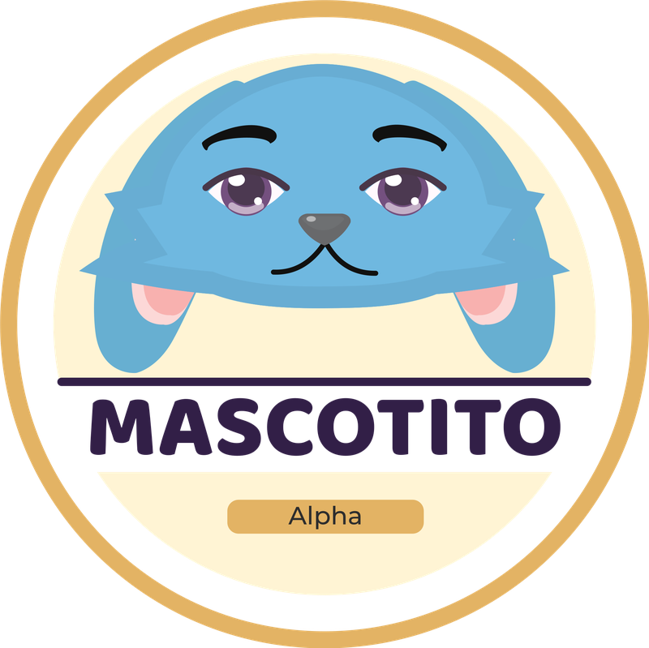

Creá tu mascota
El nombre debe tener al menos 2 caracteres.

Elegí tu nombre de usuario para guardar tu partida.
Si ya jugaste en este navegador, tu partida anterior se asociará al nombre que ingreses.
Por ahora, tu partida se guarda solo en este navegador, sin contraseña.
El nombre debe tener al menos 2 caracteres.